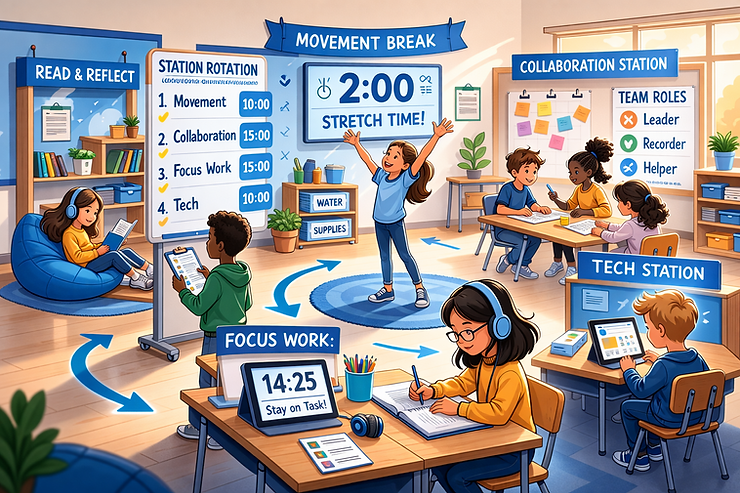

Picture this: it’s back-to-school season, and you’re sitting across from your child’s new teacher at a meet-and-greet. You take a deep breath and start explaining that your kid has ADHD, or autism, or both. The teacher nods along and says something like, “Oh, don’t worry! I always make sure to teach to their learning style.”
And you smile. Because it’s a kind thing to say. But somewhere in the back of your mind, a little voice whispers, “But... what does that actually mean?”
Here’s the thing: “learning styles” as most of us think about them (visual learner, auditory learner, kinesthetic learner) don’t hold up under the research. Major reviews have repeatedly found that matching instruction to a child’s supposed “style” doesn’t reliably improve outcomes. Not gonna lie, that might feel like a rug-pull moment. But the good news? What the research does support is actually way more useful and way more supportive of neurodivergent kids.
So let’s dig into what teachers can actually do, and what you can advocate for starting right now.
How to Support Neurodivergent Kids in the Classroom Without Relying on Learning Styles
For kids with ADHD or autism spectrum disorder (ASD), the real question isn’t “what style do they prefer?” It’s “what’s getting in the way?”
For a kid with ADHD, the barriers often look like: executive function challenges (planning, organizing, getting started), working memory overload, and self-regulation demands. For a kid with ASD, the barriers might look different: high language load from complex instructions, unpredictability causing anxiety, sensory overwhelm, or difficulty interpreting social cues.
Same classroom. Same lesson. Very different reasons why a child might struggle. And that matters, because the supports need to match the barrier.
A much more useful framework than learning styles is Universal Design for Learning (UDL). It asks: can we build lessons that give students multiple ways to access information, engage, and show what they know? When you design for multiple pathways from the start, you naturally reduce barriers for a whole lot of kids, including the neurodivergent ones.
Visual Supports: More Than Just “A Visual Learner Thing”
Visual supports are great for kids with ADHD and autism, but the reason why matters.
For a child with ADHD, a visual checklist or step-by-step anchor chart is a working memory aid. It offloads the mental effort of remembering what comes next so they can focus their energy on actually doing the task. Think of it like giving someone a GPS instead of asking them to memorize a 12-step route.
For a child with ASD, visual supports like daily schedules or “first-then” boards reduce uncertainty. When a child knows exactly what’s coming, the anxiety that often comes with unpredictability goes way down, and learning becomes possible again.
The key is keeping visuals clean and intentional. A cluttered classroom wall can actually backfire for kids whose attention is easily pulled. Teachers can think in three layers: a big-picture daily agenda, a lesson-level sequence (what we do first, next, last), and within-task supports like checklists or timers. Simple, structured, effective.
Giving Instructions That Actually Land
Long oral instructions are where a lot of neurodivergent kids fall off the bus. If you have ADHD, your attention might drift around step three of a five-step explanation. If you have ASD, a fast-paced verbal explanation might leave you still processing step one while the teacher is already on step four. It makes sense that this would be a challenge.
The fix: chunk-and-check. Give one or two steps, pause, ask the student to paraphrase, then release. Pair every oral instruction with a visual cue, whether that’s a written step on the board or a physical model. And when a student needs a reminder, quietly pointing to the visual is almost always more effective than repeating instructions out loud.
For kids with ASD, avoiding idioms and indirect language in directions is also a game-changer. “Give it your best shot” might land very differently than intended. Concrete, direct language removes the guesswork.
Structured Movement and Hands-On Learning
Movement and hands-on activities can be genuinely great for ADHD, but “just let them move whenever they need to” can backfire. What works is structured movement: scheduled movement breaks, stations with clear roles and time limits, or response cards where kids hold up answers. These build in engagement while keeping the predictability that neurodivergent kids often need to feel settled.
For kids with ASD, hands-on activities require an extra layer of thought around sensory experience. An unexpected texture or a sudden change in the activity can be genuinely distressing. Previewing what a hands-on activity will involve, offering choice in materials, and building in a clear way for students to request a break (”I need a break,” “Can I try a different material?”) can make the difference between an activity that’s engaging and one that’s overwhelming.
Behavior Supports That Actually Teach Something
Here’s a truth that sometimes gets lost: behavior supports should teach skills, not just suppress behaviors.
For kids with ADHD, the strongest supports are proactive. Pre-correcting before a tricky transition, giving specific labeled praise (”You started your work right when I asked”), and consistent reinforcement systems with quick, clear feedback. Vague praise like “good job” doesn’t give the ADHD brain enough information. Specific feedback does.
For kids with ASD, behavior support works best when it’s function-based, meaning adults try to understand what the behavior is communicating before trying to change it. A child who shuts down during group work might be overwhelmed by noise, confused about expectations, or unsure how to ask for help. Teaching a replacement skill, like a scripted phrase to request a break, is far more effective than simply trying to stop the behavior.
For both groups: clear and observable expectations beat vague ones every time. “Be good” means something different to everyone. “Stay in your seat during work time and raise your hand if you need help” is something a child can actually understand, practice, and succeed at.
Building a Classroom That Feels Safe
Environment matters more than most people realize. Some practical, high-impact adjustments: reduce background noise and offer headphone options for kids with auditory sensitivity. Simplify wall displays near instruction areas. Create defined spaces with clear purposes. And plan transitions carefully, with warnings and timers, because transitions are often where dysregulation spikes for both ADHD and ASD.
These aren’t accommodations that single a child out. When they’re built into the classroom for everyone, they’re just good teaching.
What You Can Advocate For
If you’re a parent, you’re in an important position. Here are a few things worth bringing up in IEP, 504, or teacher check-in meetings:
- Ask how transitions are handled and whether visual supports are in place.
- Ask how instructions are delivered and whether your child can reference steps if they lose track.
- Ask what behavior supports look like and whether they focus on teaching replacement skills.
- Advocate clearly for assessment modifications like extended time, chunked tests, or alternative ways to demonstrate knowledge.
If navigating all of this feels like a lot, ADHD coaching can help you develop a personalized plan and go into those meetings feeling confident and prepared.
And if you’re a teacher reading this: you don’t have to overhaul everything at once. Start with two or three high-leverage strategies. Use simple data to track what’s working. When something isn’t, that’s information, not failure.
The Bottom Line
Supporting neurodivergent kids in the classroom isn’t about finding their “type” and teaching to it. It’s about understanding what barriers exist for that specific brain in that specific environment, and then systematically removing them. It’s about making learning accessible, predictable, and safe. And it’s about building skills alongside accommodations, because our kids deserve both support and growth.
It’s a journey, as all things are. The fact that you’re here, thinking carefully about what your kid needs or what your students need, already says something important about you.
Until next time! Stay mindful and stay healthy!